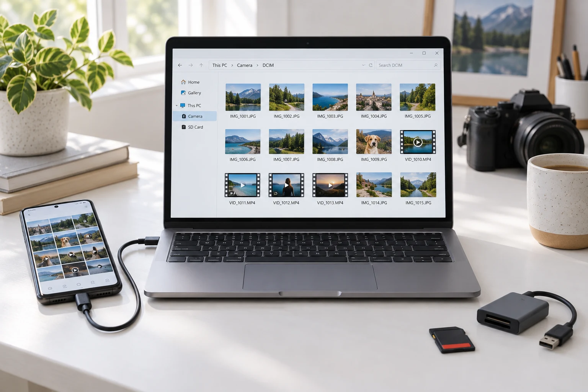

Cómo compartir fotos y videos sin perder calidad
Aprende a enviar tus fotos y videos originales por WhatsApp como archivo, compartirlos por Drive y evitar compresiones innecesarias.

La clave: compartir el archivo original
Si vas a entregar fotos o videos para edición, diseño o una campaña, comparte el archivo original de la cámara o la exportación final del editor. Una captura de pantalla, una descarga de una red social o un video que ya fue comprimido son copias distintas. Enviarlas por otro medio no recupera el detalle que perdieron.
Conservar calidad significa transferir ese archivo sin volver a reducirlo o convertirlo. La calidad de partida sigue siendo la del material que grabaste: ningún método de envío corrige por sí solo una imagen desenfocada o una grabación con poca luz.
Por qué WhatsApp puede reducir la calidad
Cuando envías una imagen o un video como contenido multimedia, WhatsApp puede comprimirlo para facilitar el envío y la reproducción. Al reducir el tamaño del archivo pueden perderse detalles finos; en video también puede modificarse la resolución o la cantidad de información usada para representar cada segundo.
La opción HD mejora la calidad del envío multimedia frente a la opción estándar, pero no debes interpretarla como una garantía de recibir exactamente el mismo archivo original. Para una revisión rápida puede resultar útil. Para entregar material de producción, utiliza un documento o un enlace al archivo original.
Consulta la ayuda de WhatsApp sobre calidad HD y sus opciones de envío de archivos y multimedia.
Si usas WhatsApp, envíalo como documento
- Localiza el original en tu teléfono o computadora. Si usas iPhone y no aparece en el selector, puedes guardarlo primero en Archivos.
- Abre el chat y pulsa el botón de adjuntar, que puede aparecer como un clip o un signo “+”.
- Elige Documento o la opción de archivo, en lugar del envío habitual desde la galería.
- Selecciona la foto o el video original y envíalo. Algunas versiones permiten elegir fotos y videos desde el propio selector de documentos.
- Pide al destinatario que descargue el archivo adjunto para trabajar con él.
Los nombres y la ubicación de las opciones pueden variar según el dispositivo. Si el archivo supera el límite que permita la aplicación, comparte un enlace de Drive. No conviertas el video ni cambies su extensión únicamente para hacerlo pasar por otro tipo de documento.
Google Drive: una carpeta y un enlace para tu equipo
- Crea una carpeta para el proyecto y sube los archivos originales. Espera a que termine la subida.
- Ordena el material con nombres claros, por ejemplo “producto-toma-01.mp4”, y separa originales de versiones editadas.
- Usa Compartir para dar acceso al correo de la persona que lo necesita. Comprueba que tenga permiso para descargar.
- Copia el enlace y envíalo por correo o WhatsApp. Lo que compartes en el chat es el enlace, no una copia comprimida del video.
- El destinatario debe usar Descargar para obtener el archivo y editarlo localmente.
Evita evaluar la calidad únicamente en el reproductor de Drive: la vista previa puede depender de la conexión y del procesamiento del video. Para comprobar tu entrega, descarga el archivo. Google explica cómo compartir archivos y permisos y cómo descargar desde Drive.
Otros medios que puedes utilizar
También puedes transferir originales mediante una carpeta de Dropbox, OneDrive o iCloud Drive, un servicio de transferencia de archivos, un cable USB o una memoria externa. Elige un método que permita entregar y descargar el archivo, sin exportarlo nuevamente como una versión reducida.
Para un equipo que trabaja de forma continua, una carpeta compartida facilita mantener el material organizado. Para una entrega puntual, un enlace de transferencia puede ser suficiente: comprueba la fecha de vencimiento que indique el servicio y confirma la descarga antes de eliminar tu copia.
Comprueba la entrega antes de borrar nada
- Descarga una muestra y revisa resolución, duración y tamaño del archivo frente al original.
- Ábrela en un reproductor o editor compatible. Diferencias de pantalla, HDR o gestión de color pueden cambiar cómo se ve, aunque el archivo sea el mismo.
- Si necesitas verificar que ambos archivos son idénticos, compara su hash; el nombre o el tamaño por sí solos no lo demuestran.
- Conserva una copia de respaldo hasta que el equipo confirme que recibió todo.
- No uses capturas de pantalla ni grabaciones de pantalla como sustituto del original.
Un ZIP puede ayudarte a agrupar varias fotos sin volver a codificarlas, aunque normalmente no reducirá mucho el tamaño de fotos y videos ya comprimidos. Para una entrega a Getpes, comparte una carpeta con originales, referencias y la versión final aprobada en lugares separados.
Hagamos que tu marca tome forma.
En Getpes trabajamos contenido, video, campañas digitales y diseño. Conoce nuestro trabajo o cuéntanos qué necesita tu negocio.
Conversemos Ver portafolio